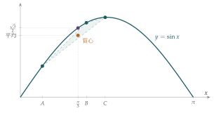

STEP II 2007，第 7 題
繼續之前，請先閱讀題目（原題為英文）。題目載於 STEP Support Programme 的題目資料庫： step.maths.org/questions/07-s2-q7
引子
在 第 3.2 節 中，我們用一個巧妙的歸納法（induction）證明了 AM–GM 不等式。在這一節，它只需一行便水到渠成，因為它不過是某個更宏大的結果的特殊情形。這個更宏大的東西就是凹性（concavity）：向下彎的曲線所具有的形狀，就像山頂一樣。關於這類曲線，有一個簡單的幾何事實：曲線位於它的弦（chord）之上。單憑這一點，竟然可以證明範圍廣得驚人的各種不等式（inequality），從關於三角形的一個結果，到 AM–GM 不等式，以至概率（probability）、信息論（information theory）和經濟學中的不等式。
到了大學，這個想法會發展成凸性（convexity），它是現代數學中最能貫通各個領域的重要主題之一。有些學科，例如凸優化（convex optimisation），整個就是建基於它之上。
動筆之前
畫一條向下彎的曲線，例如 \((0, \pi)\) 上的 \(y = \sin x\)。在曲線上標出兩點，並用直線把它們連起來。這條弦在曲線之上還是之下？
在曲線之下。對於凹曲線，每一條弦在兩個端點之間都位於曲線之下。兩個函數值的平均，就是弦的中點的高度；而函數在平均值處的取值，就是該中點正上方的曲線高度。因此，「弦在曲線之下」正正就是 \(n = 2\) 時的琴生不等式（Jensen’s inequality）： \[\frac{\mathrm{f}(x_1) + \mathrm{f}(x_2)}{2} \leq \mathrm{f}\left( \frac{x_1 + x_2}{2} \right).\] 若有 \(n\) 個點，則各點 \((x_k, \mathrm{f}(x_k))\) 的平均就是它們的質心（centre of mass），它位於曲線下方的區域之內，所以同樣在曲線之下（圖 3.3.1）。
逐步解題
階段 1 驗證凹性
當 \(0 < x < \pi\) 時，\(\frac{\mathrm{d}^2}{\mathrm{d}x^2}\sin x = -\sin x < 0\)；當 \(x > 0\) 時，\(\frac{\mathrm{d}^2}{\mathrm{d}x^2}\ln x = -\frac{1}{x^2} < 0\)。■
階段 2 三角形
應該用哪個函數、取哪些點？它們的平均是甚麼？三角形的各個角是否都落在函數呈凹性的區間之內？
取 \(\mathrm{f}(x) = \sin x\) 和三個點 \(A, B, C\)。每個角都嚴格介乎 \(0\) 與 \(\pi\) 之間，而 \(\sin\) 在這個區間上是凹的，它們的平均是 \(\frac{A + B + C}{3} = \frac{\pi}{3}\)。由琴生不等式得 \[\frac{\sin A + \sin B + \sin C}{3} \leq \sin\frac{\pi}{3} = \frac{\sqrt3}{2},\] 所以 \(\sin A + \sin B + \sin C \leq \frac{3\sqrt3}{2}\)，而等號恰好在等邊三角形（equilateral triangle）時成立。■

階段 3 一行證明 AM–GM
AM–GM 不等式比較的是一個積與一個和。哪個凹函數能把積變成和？
對數（logarithm）。把琴生不等式應用於 \(\mathrm{f} = \ln\) 和正數 \(t_1, \ldots, t_n\)： \[\frac{\ln t_1 + \cdots + \ln t_n}{n} \leq \ln\left( \frac{t_1 + \cdots + t_n}{n} \right).\] 左邊是 \(\ln\bigl(\sqrt[n]{t_1 \cdots t_n}\bigr)\)。由於 \(\ln\) 是遞增函數，我們可以把兩邊的對數同時去掉，這就是 AM–GM 不等式。等號恰好在所有 \(t_k\) 都相等時成立。■
階段 4 運用 AM–GM
在 (a) 中，左邊是四項之和，右邊含有三個變量的積。你應該對多少項應用 AM–GM 不等式？那個 \(16\) 又為何有用？
對四個正數 \(x^4\)、\(y^4\)、\(z^4\)、\(16\) 應用 AM–GM 不等式： \[\frac{x^4 + y^4 + z^4 + 16}{4} \geq \sqrt[4]{16\,x^4 y^4 z^4} = 2xyz.\] 兩邊乘以 \(4\)，得 \(x^4 + y^4 + z^4 + 16 \geq 8xyz\)。■
現在求 \(x^5 + y^5 + z^5 - 5xyz\) 的最小值。（提示：你想要的是 \(x^5y^5z^5\) 的五次方根，所以需要五個數。另外兩個數應該是甚麼？）
對 \(x^5, y^5, z^5, 1, 1\) 應用 AM–GM 不等式： \[\frac{x^5 + y^5 + z^5 + 1 + 1}{5} \geq \sqrt[5]{x^5y^5z^5} = xyz,\] 所以 \(x^5 + y^5 + z^5 - 5xyz \geq -2\)。等號在 \(x^5 = y^5 = z^5 = 1\) 時成立，即 \(x = y = z = 1\)，這時該式的值為 \(3 - 5 = -2\)。因此最小值是 \(-2\)。■
留意等號成立的條件在這裏身兼兩職：它說明這個界確實可以取到，所以 \(-2\) 是最小值，而不僅僅是一個下界（lower bound）。
回顧
一個想法，多個不等式。關於凹曲線的一個幾何事實，既給出了一個關於三角形的結果，又給出了 AM–GM 不等式，而所需的計算不過是驗證一個二階導數（second derivative）。
選擇函數和點。運用琴生不等式，就是要決定把它應用於哪個函數、取哪些點。對數能把積變成和，是常用之選。
補項以配合題目。在 (b) 中，補上兩個 \(1\) 令 AM–GM 不等式切合題目，正如在 第 3.2 節 中補上平均值一樣。
背後的數學
在大學裏，凸函數（convex function，即把凹函數上下倒轉）的標準定義完全不涉及導數：若 \[\mathrm{f}\bigl(t x_1 + (1-t)x_2\bigr) \leq t\,\mathrm{f}(x_1) + (1-t)\,\mathrm{f}(x_2) \qquad\text{對所有 } x_1, x_2 \text{ 及 } 0 \leq t \leq 1,\] 則稱 \(\mathrm{f}\) 為凸函數，這正正是說弦位於曲線之上。這個定義對不可微（not differentiable）的函數（例如 \(|x|\)）以及多元函數同樣適用。丹麥工程師兼數學家琴生（Johan Jensen）在 1906 年提出了以他命名的不等式，使凸函數成為一門獨立的學問。
無處不在的凸性
凸性在數學及其應用中隨處可見。
概率。琴生不等式指出，對於凹函數 \(\mathrm{f}\) 和任意隨機變量（random variable）\(X\)，有 \(\mathrm{E}[\mathrm{f}(X)] \leq \mathrm{f}(\mathrm{E}[X])\)。在經濟學中，若以 \(\mathrm{f}\) 為一個凹的「效用」（utility）函數，這就解釋了為何人們寧願穩拿 £100，也不願參與一場各有一半機會得到 £0 或 £200 的賭局，亦解釋了為何會有保險。
信息論。均勻分佈（uniform distribution）使熵（entropy）達到最大，這個結果是數據壓縮的基礎，而它的證明就是 \(\ln\) 的琴生不等式。
優化。凸函數除了全局最小值之外，再沒有其他局部極小值（local minima），所以「一直往下坡走」總能找到最佳答案。這就是凸優化問題能夠有效率地求解的原因，也是人們花那麼多工夫把問題改寫成凸形式的原因。
在 第 3.4 節 中，我們會看到凸性的另一面：函數與其反函數（inverse）之間的一種幾何對偶（duality）。
思維技巧
當幾個結果的證明相似時，要找出它們背後的同一個原理。然後把這個原理證明一次，再多次應用。
AM–GM 不等式、關於正弦的三角形不等式，以及許多其他結果，全都是「凹曲線位於它的弦之上」的實例。認出這個原理，就能把一堆零散的技巧變成一套方法。
延伸練習
定義。STEP II 2018，第 2 題 的第 (i) 及 (ii) 部分由上面方框中以弦刻劃凹性的定義出發，逐步建立三個點的琴生不等式。
正弦之積。試做 STEP II 2018，第 2 題 的第 (iii) 部分。
銳角三角形。證明 \(\tan x\) 在 \((0, \frac\pi2)\) 上是凸的，並由此推出在銳角三角形（acute-angled triangle）中，\(\tan A + \tan B + \tan C \geq 3\sqrt3\)。
冪平均。證明 \(x^2\) 是凸的，並由此推出 \(\left(\frac{a_1 + \cdots + a_n}{n}\right)^2 \leq \frac{a_1^2 + \cdots + a_n^2}{n}\)。試把這個結果詮釋為關於一組數的方差（variance）的命題。
延伸閱讀
J. Michael Steele, The Cauchy–Schwarz Master Class（Cambridge University Press）。第 6 章講述凸性和琴生不等式。
Claudi Alsina & Roger Nelsen, When Less Is More: Visualizing Basic Inequalities（Mathematical Association of America）。以圖形證明不等式，當中不少用到凸性。
Stephen Boyd & Lieven Vandenberghe, Convex Optimization（Cambridge University Press）。一部現代經典，可在網上免費閱讀；開首幾章說明凸性在實際應用中為何重要。